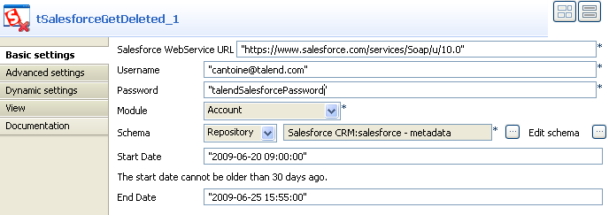
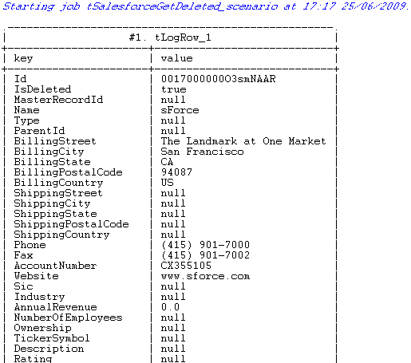

|
Famille de composant |
Business/Cloud | ||||
|
Fonction |
Le composant tSalesforceGetDeleted récupère les données supprimées d’un objet Salesforce sur une période donnée. | ||||
|
Objectif |
Ce composant récupère les données supprimées de l’objet Salesforce spécifié sur une période spécifiée. | ||||
|
Basic settings |
Use an existing connection |
Cochez cette case pour utiliser une connexion établie à partir du tSalesforceConnection. Une fois cochée, la liste Component List apparaît, et vous permet de sélectionner le composant tSalesforceConnection devant être utilisé. Pour plus d’informations, consultez le composant tSalesforceConnection.
| |||
|
|
Salesforce Webservice URL |
Saisissez l’URL du service Web permettant de se connecter à la base de données Salesforce. | |||
|
|
Username et Password |
Saisissez les informations d’authentification de l’utilisateur au service Web. | |||
|
|
Timeout (milliseconds) |
Saisissez le délai avant suspension de la requête sur Salesforce.com. | |||
|
|
Module |
Sélectionnez l’objet adéquat dans la liste. Custom Object : cette option fait apparaître le champ Costum Module Name dans lequel vous pouvez saisir l’objet auquel vous souhaitez vous connecter. | |||
|
|
Schema et Edit Schema |
Un schéma est une description de lignes, i.e., il définit le nombre de champs qui sont traités et passés au composant suivant. Le schéma est soit local (built-in) soit distant dans le Repository. Cliquez sur Edit Schema pour modifier le schéma. Notez que si vous modifiez le schéma, il devient automatiquement built-in. Cliquez sur Sync columns pour récupérer le schéma du composant précédent. | |||
|
|
Start Date |
Saisissez entre guillemet la date à laquelle vous voulez commencer la recherche. Pour cela, utilisez le format de date suivant : “yyy-MM-dd HH:mm:ss”.
| |||
|
|
End Date |
Saisissez entre guillemet la date à laquelle vous voulez terminer la recherche. Pour cela, utilisez le format de date suivant : “yyy-MM-dd HH:mm:ss”. | |||
|
Advanced settings |
Use Soap Compression |
Cochez cette case pour activer la compression SOAP.
| |||
| Client ID | Définissez l'ID de l'utilisateur réel afin de différencier ceux qui utilisent le même compte et le même mot de passe pour accéder au site Web Salesforce. | ||||
|
|
tStatCatcher Statistics |
Cochez cette case pour collecter les données de log au niveau du composant. | |||
|
Utilisation |
Ce composant est utilisé comme composant de sortie. Il nécessite un composant d’entrée. | ||||
|
Limitation |
n/a | ||||
![[Note]](../images/note.png)
Ce scénario décrit un Job à deux composants permettant de récupérer les données supprimées du serveur Salesforce, dans les 5 derniers jours.
Cliquez et déposez les composants tSalesforceGetDeleted et tLogRow de la Palette dans le Job Designer.
Reliez-les via un lien de type Row > Main.
Double-cliquez sur le composant tSalesforceGetDeleted pour afficher l’onglet Basic settings de la vue Component et paramétrer ses propriétés :
Dans le champ Salesforce WebService URL, laissez l’URL du service Web Salesforce par défaut ou saisissez l’URL à laquelle vous souhaitez accéder.
Dans les champs Username et Password, saisissez votre identifiant et votre mot de passe de connexion au service Web.
Dans la liste Module, sélectionnez l’objet auquel vous souhaitez accéder. Dans ce scénario, l’objectif est d’accéder à l’objet Account.
Dans la liste Schema, sélectionnez Repository puis cliquez sur le bouton [...] pour sélectionner le schéma du repository que vous souhaitez utiliser pour le composant. Si vous n’avez pas enregistré le schéma dans les métadonnées du repository, sélectionnez Built-in dans la liste Schema et cliquez sur le bouton [...] à coté du champ Edit schema et paramétrer le schéma manuellement.
Dans les champs Start Date et End Date, saisissez la date de début et de fin de recherche des données supprimées en utilisant le format de date suivant : “yyyy-MM-dd HH:mm:ss”. Vous ne pouvez effectuer la recherche que sur les 30 derniers jours. Dans ce scénario, l’objectif est de chercher les données supprimées dans les cinq derniers jours.
Double-cliquez sur le composant tLogRow pour afficher l’onglet Basic settings de la vue Component et paramétrer ses propriétés :
Cliquez sur le bouton Sync columns pour récupérer le schéma du composant précédent.
Dans la zone Mode, sélectionnez l’option Vertical pour faire apparaître le résultat dans sous forme de tableau dans la console.
Enregistrez votre Job et appuyez sur F6 pour l’exécuter.
La console affiche les données supprimées récupérées par le composant tSalesforceGetDeleted sous forme de tableau.